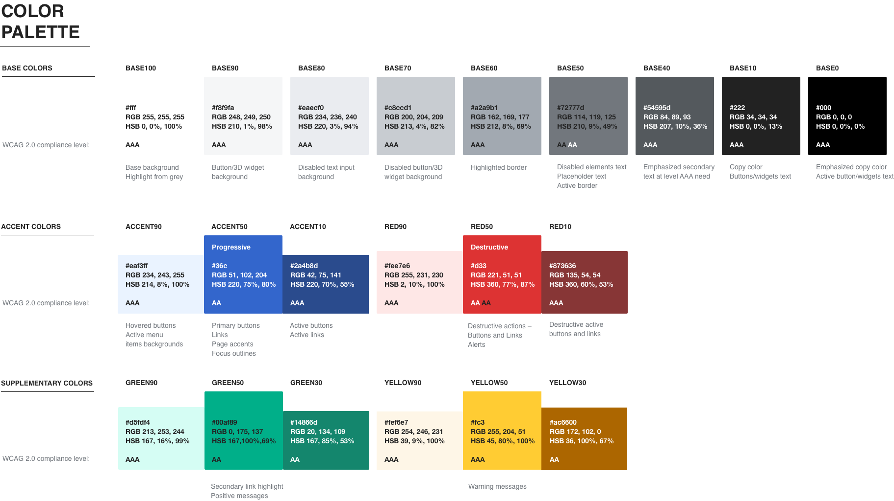

Visual Style
The identified principles are captured below. there are more details in this page.
This is for everyone
Our core visual identity presents our main content on a single main page or layer.
We emphasise content by using only this single layer, which sits on top of a base gray surface that contains the chrome (structural elements of content which also host controls).
Colors
Considerations around accessibility were our top priority when choosing the colors of our color palette.
Typography
Typefaces are the defined set of character glyphs that render written words. They are consciously designed to reflect a mix of art (style) and legibility, often called “readability.”
Because so much of Wikipedia and Wiki projects rely on writing and reading, typefaces are a key component of Wikimedia design.